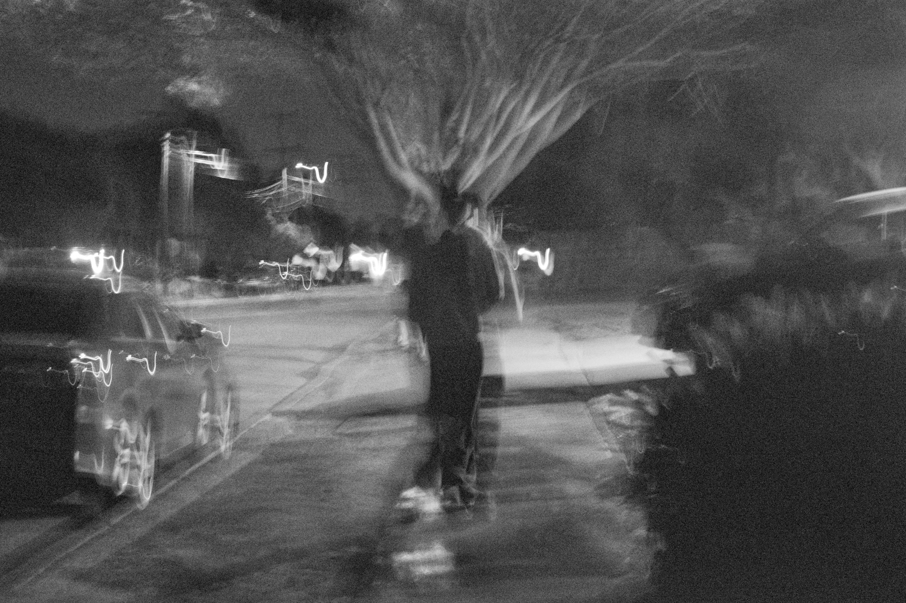
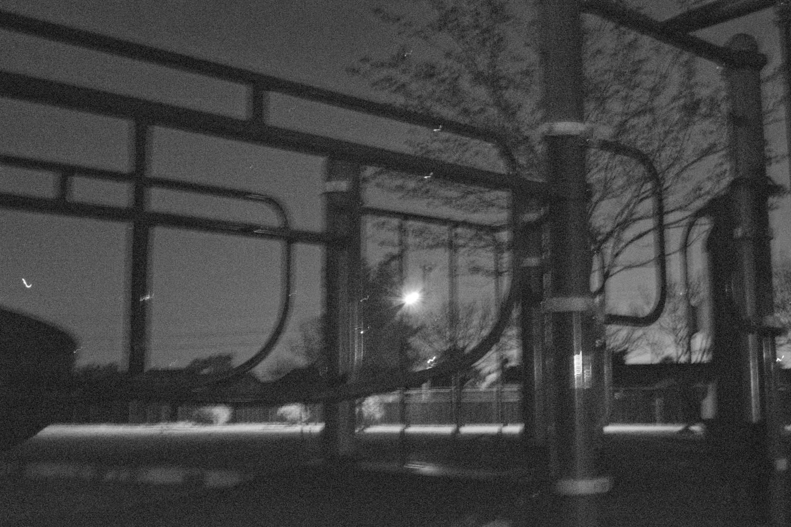
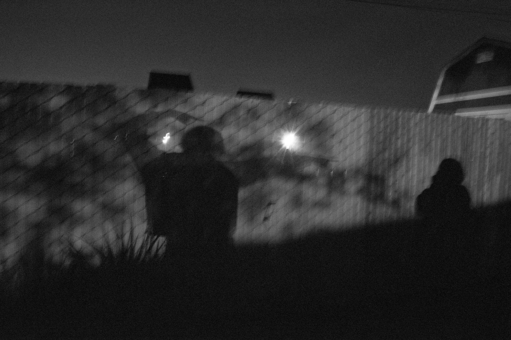
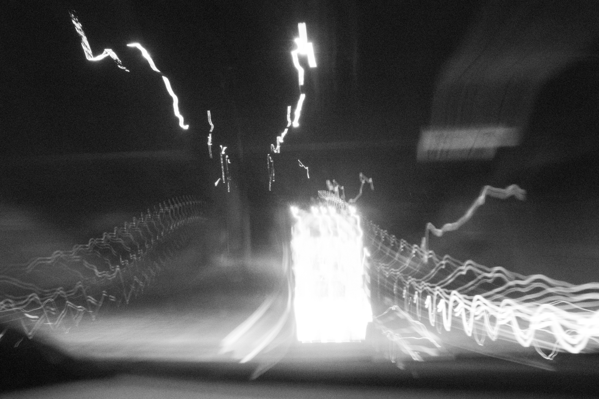
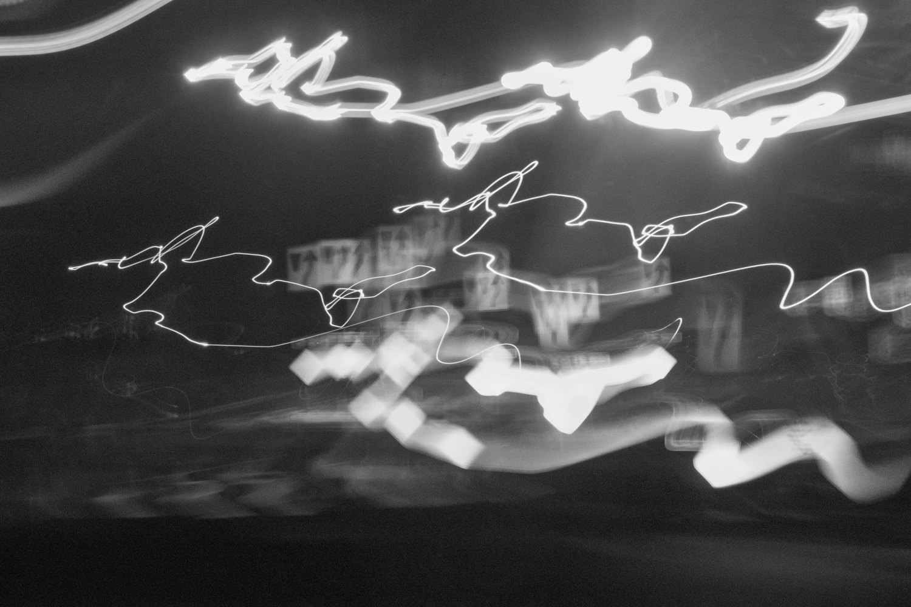
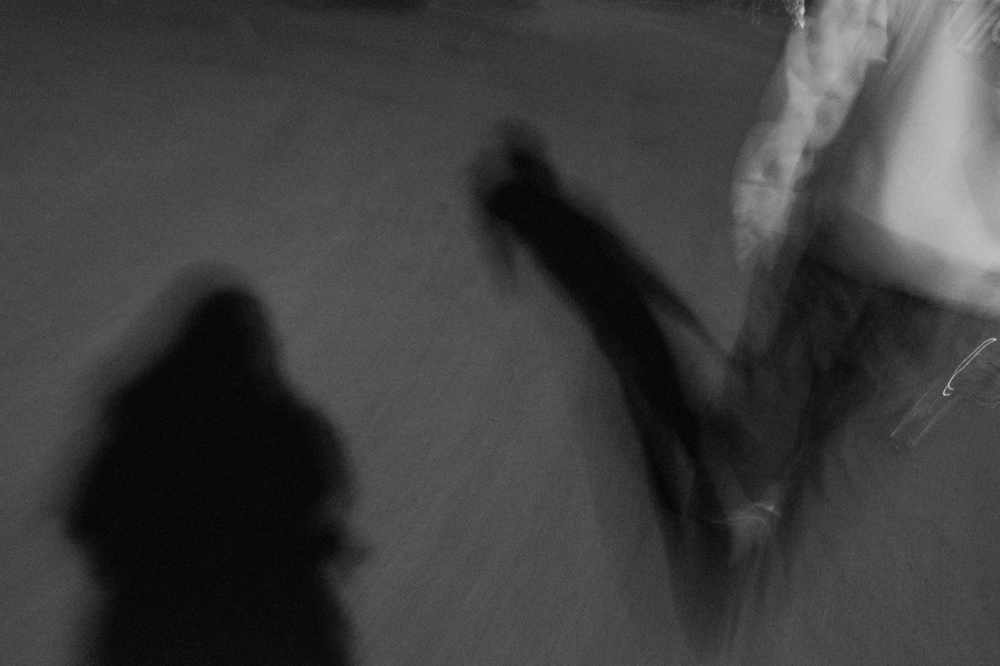
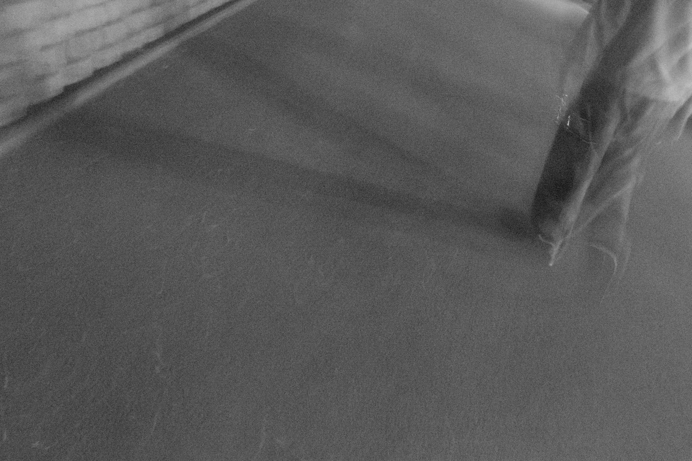
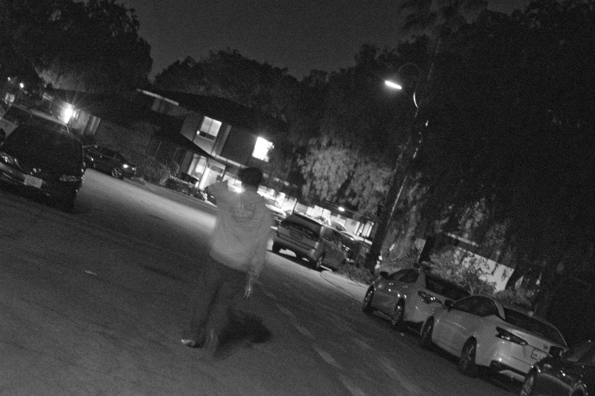

I had no plans going into this series project, and I went on a couple of outings that might have possibly felt like, “yes, this is the one.” But when I was taking this walk with my brother late at night, we just watched a movie at the movie theater and dropped off a friend back to their home, I was telling him that I wanted to take pictures but then did not tell him what they were of. I love the low exposure, slow shutter speed vibe of these late night photos. If you would like a specific location for each of these images, I would just have to say it is all from Fremont. Otherwise, I wanted to dedicate this to the complicated relationship I have for my brother, in the sense where, of course, I love and hate him. This is about how I look up to him like light in a dark tunnel, admiration where I follow, but also the loneliness of walking behind him or hoping that he would turn back and acknowledge me as well. There’s also an issue of where sometimes I feel like I’m the older one between the two of us, so frustration builds and my vision of him becomes blurry. The direction becomes unclear and so is my trace in walking behind him. I just could not imagine a world without him, no matter how much he gets on my nerves sometimes. I remember someone said something along the lines of “what are people, if not memories?” Beside my gripes with my siblings, I think I still love to be around them and we are each such a tangled mess of things. I will forever continue to want to hold these messy and shared memories with each other for as long as time does not forget.